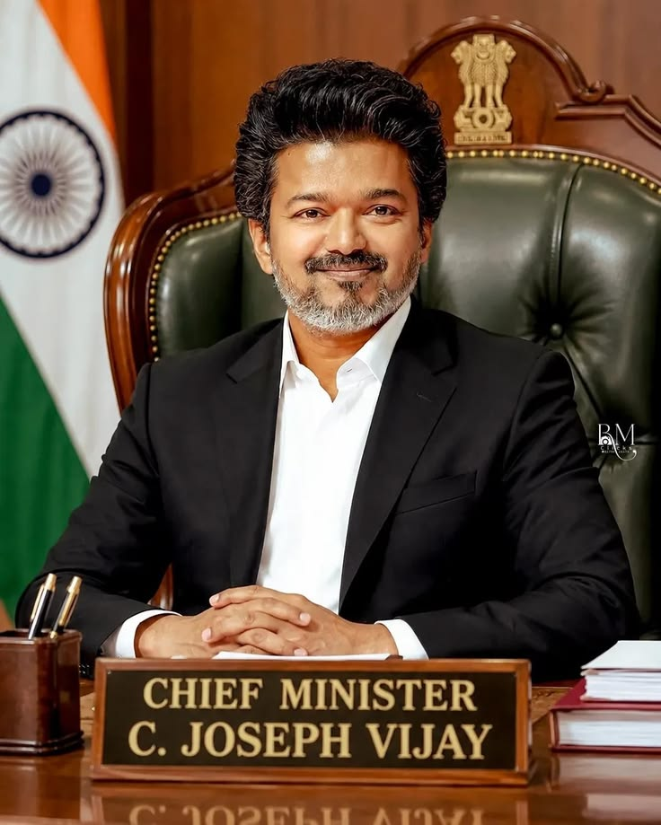
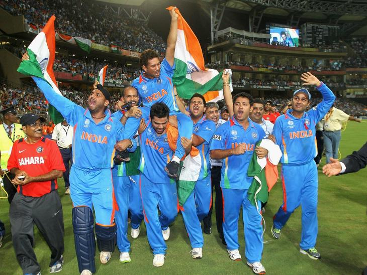

Breaking News
Politics News

TVK Strengthens Its Political Presence in Tamil Nadu
Chennai, October 6, 2026:Tamilaga Vettri Kazhagam (TVK) continues to attract attention in Tamil Nadu politics as the party works to strengthen its organisation across the state.
The party has been focusing on connecting with young people and building its presence among voters across different districts. Party activities, public meetings, and organisational programmes are being conducted to increase public engagement.
Sports News

🏏 India Cricket Team Creates New Sporting Buzz
New Delhi, October 6, 2026:Indian cricket continues to attract huge attention from sports fans across the country. The Indian team is preparing for upcoming international matches with a strong focus on building a balanced squad. Young players are getting more opportunities to represent India, while experienced players continue to guide the team. The combination of young talent and experience is expected to play an important role in India's future cricket campaigns. Fans across India are eagerly following the team's performances and hoping for more memorable victories in international cricket
Entertainment News

40,000 Freshers to Get IT Jobs as Companies Increase Hiring:
Chennai, October 6, 2026:The Indian IT industry is expected to create new job opportunities for around 40,000 freshers as several technology companies increase their hiring activities.
The hiring drive is expected to focus on graduates with skills in Software Development, Web Development, Data Analytics, Cloud Computing, Artificial Intelligence, Cybersecurity, and Testing.